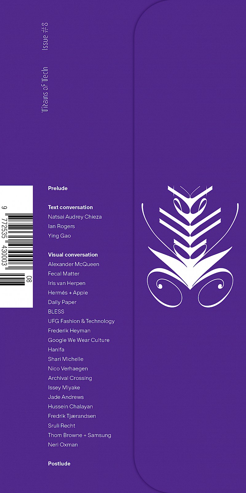

Wallet is a fashion commentary publication dedicated to creating a critical dialogue within the fashion industry. Thematically produced, each issue asks new questions around various aspects of the fashion industry; be it power, publishing, education, space, retail, casting, advertising, technology. Published three times per year, each issue is delicately structured and designed within its iconic pocket-sized format.
-Wallet

Wallet